Generated: 2026-07-03T08:02:14
| Item | Value |
|---|---|
| data_yaml | /home/drnguyenvinh/notebooks/shrimp_yolo_canonical_bg_wssv_2cls_split70_15_15/data.yaml |
| dataset_root | /home/drnguyenvinh/notebooks/shrimp_yolo_canonical_bg_wssv_2cls_split70_15_15 |
| classes | 0:BG, 1:WSSV |
| total_images | 746 |
| total_boxes | 5569 |
| train_images | 523 |
| val_images | 112 |
| test_images | 111 |
| audit_issue_images | 0 |
| empty_or_missing_label_images_total | 0 |
| include_thumbnails | False |
| mean_boxes_per_image | 7.465 |
| median_boxes_per_image | 6.0 |
| mean_box_area_percent | 0.0997 |
| median_box_area_percent | 0.0491 |
| tiny_box_count_<0.1% | 3933 |
| small_box_count_0.1-1% | 1598 |
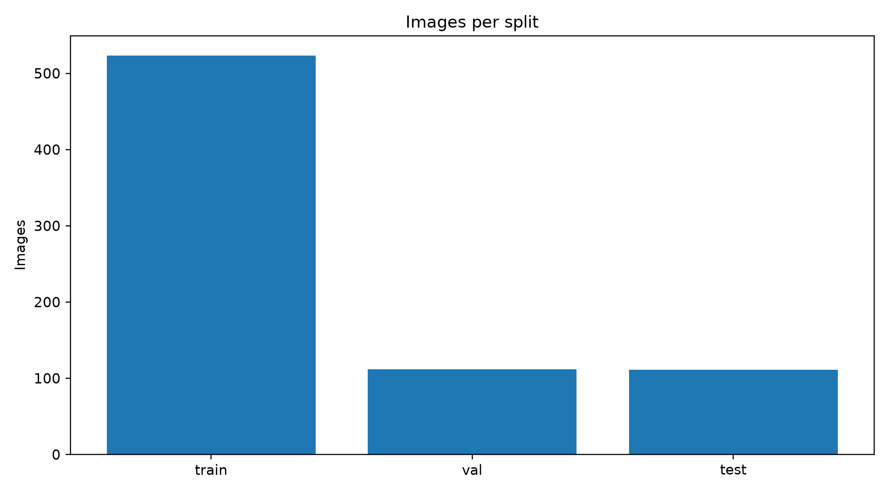
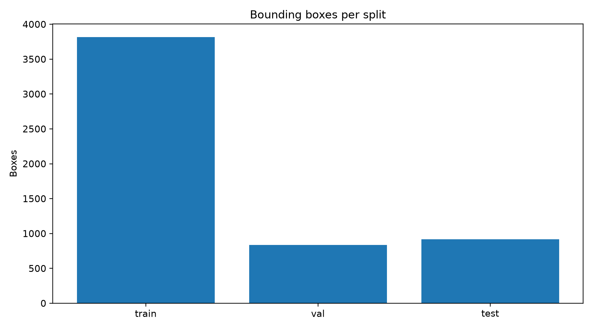
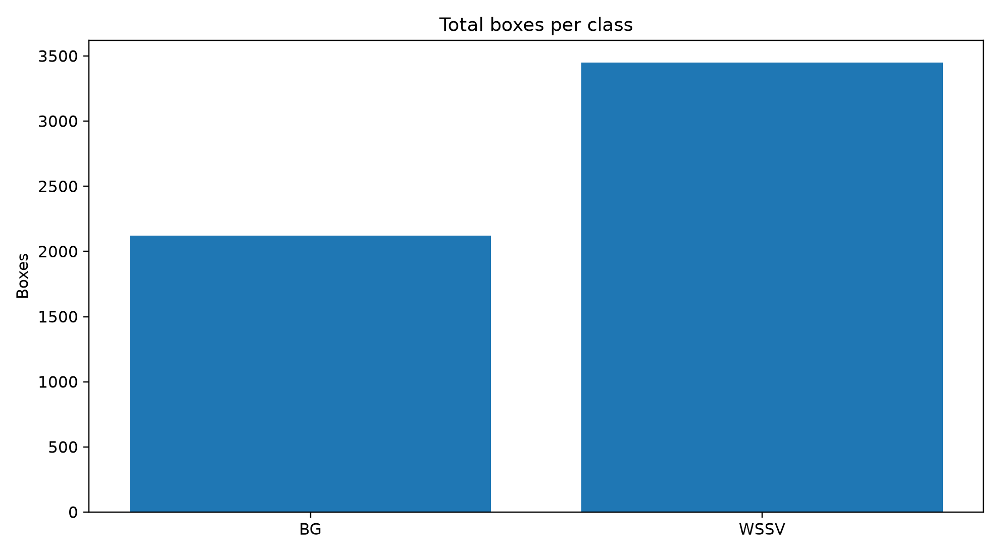
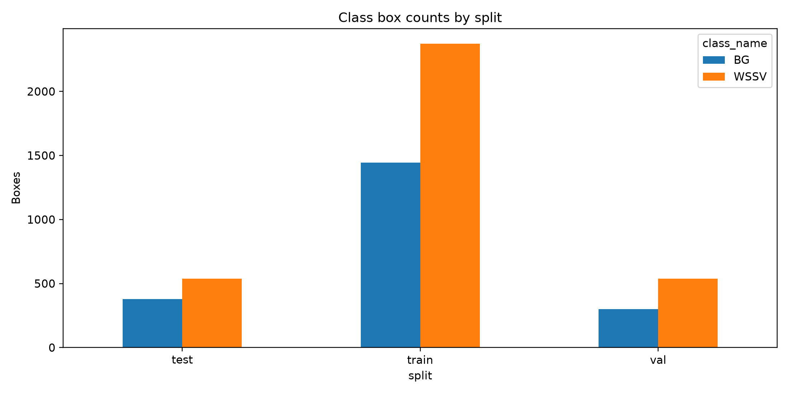
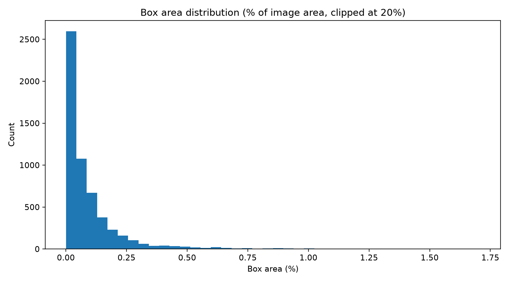
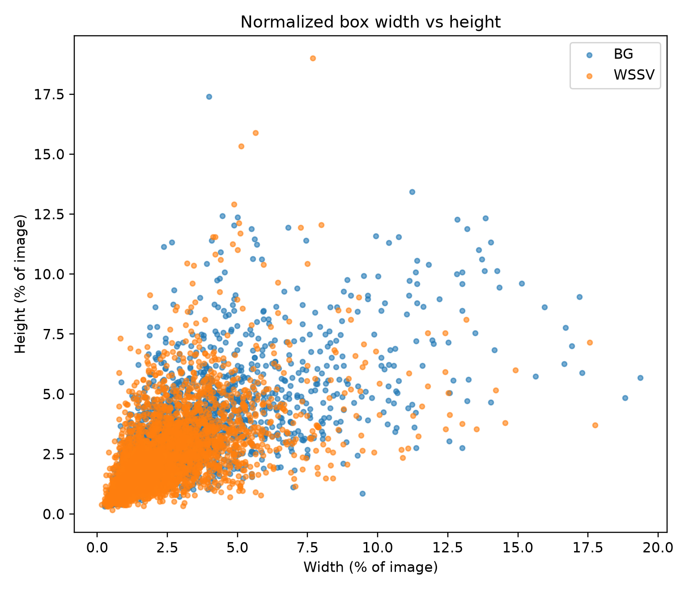
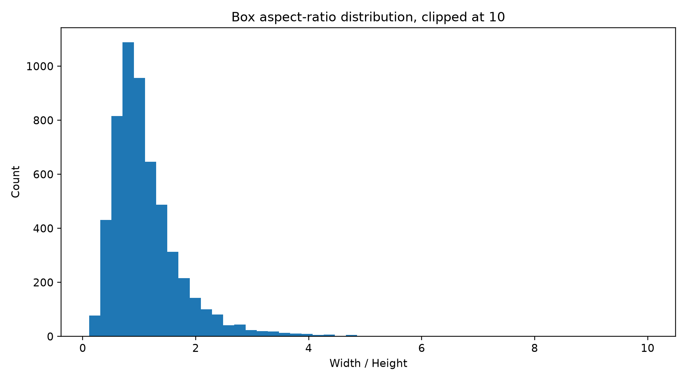
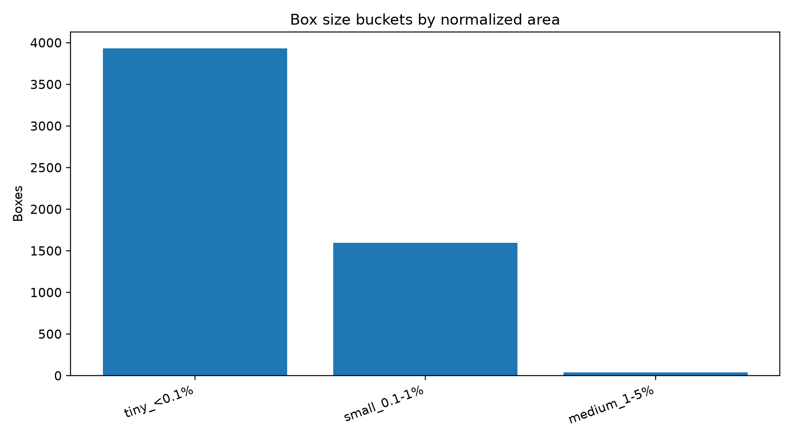
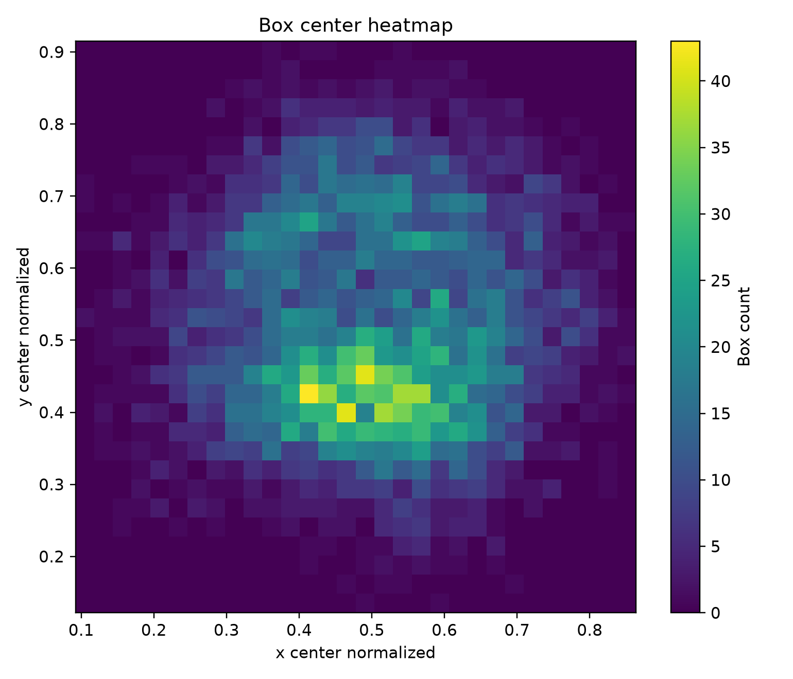
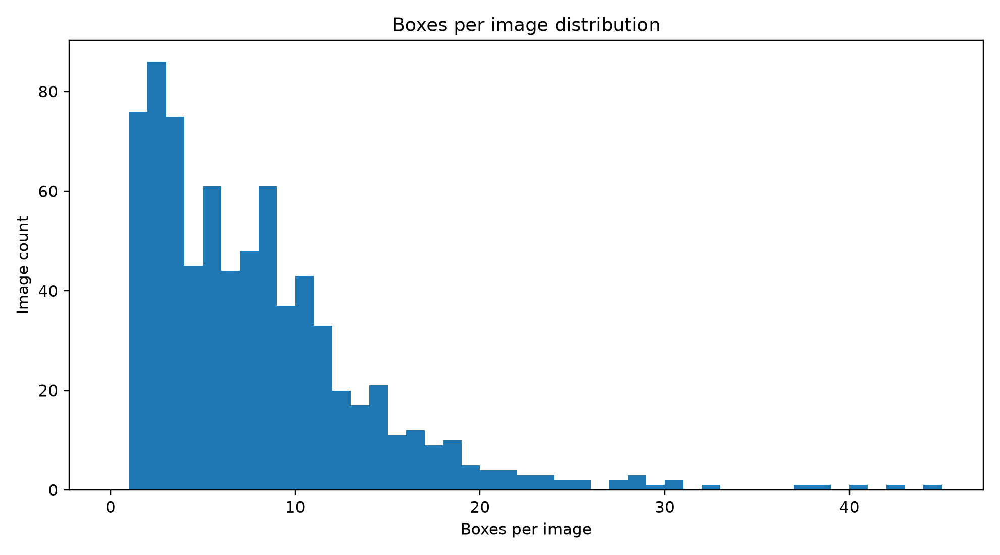
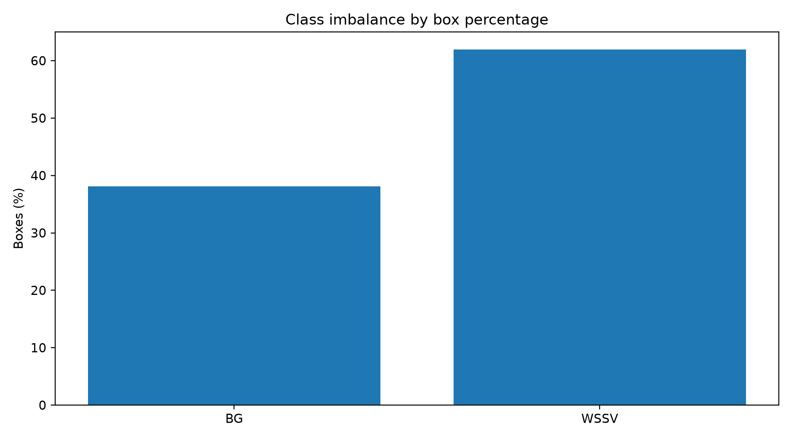
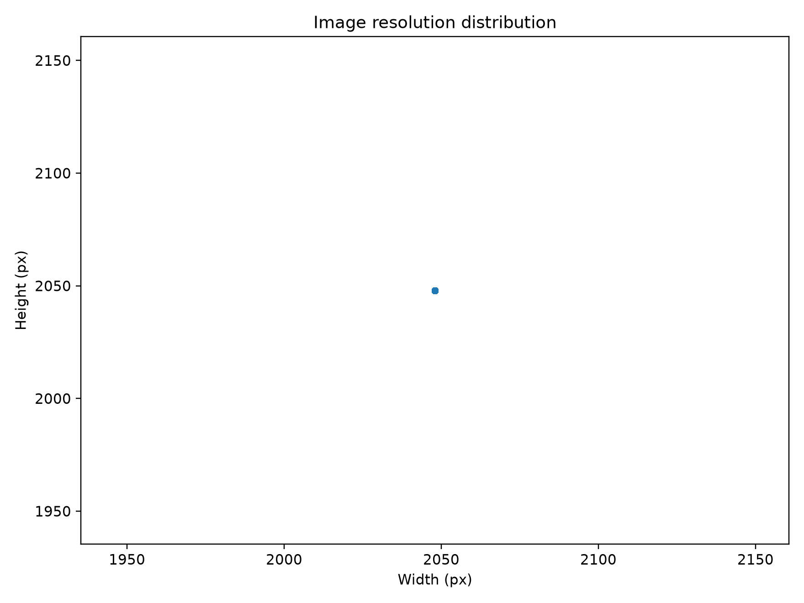